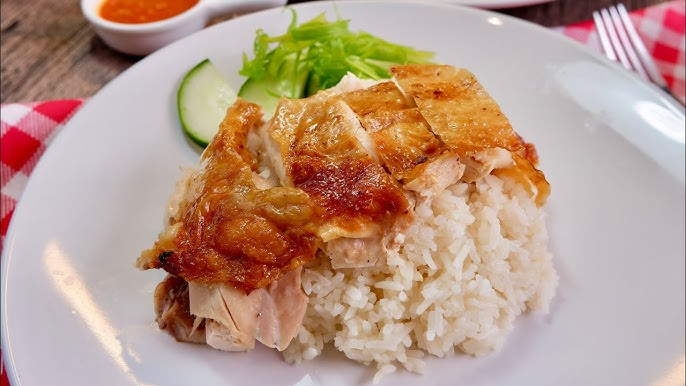

Chicken Rice

Description
Chicken rice is a beloved dish known for its simple yet flavorful
combination of tender chicken and fragrant rice. Popular in many
Asian cuisines, especially in Singapore, Malaysia, and Thailand,
the dish often features poached or roasted chicken served over
rice cooked in chicken broth, garlic, and ginger. It is typically
accompanied by a tangy chili sauce, soy sauce, and sometimes a
ginger-scallion dip, creating a perfect harmony of taste.
Chicken rice is not just a meal; it's a cultural icon celebrated
for its comforting and wholesome appeal.
Ingredients
- chicken
- rice
- ginger
- salt
- sesame oil
- coriander
- cucumber
- shallots
- salt
- garlic
- chicken stock
Steps
- Rub chicken skin with salt and set aside
- In a pan or pot with a lid, heat up the chicken fat or oil.
Add the ginger, garlic, and shallot. Cook, stirring, until
fragrant. Stir in the rice and fry gently until glossy.
- Add chicken stock, then place the chicken, skin side up, in the
pan. Add the green onions on top. Bring to boil over medium high
heat and when it starts to simmer, cover and turn the heat down
to low. Cook for 17 minutes, turn off the heat, and let rest for
10 minutes.
- While the rice is cooking, make the green onion oil: place the
green onions in a deep heat proof bowl and set aside.
- In a small pot, heat 1/4 cup oil over medium heat until it
reaches 275°F. Remove the pot from the stove and very carefully
pour over the green onions - they will sizzle and bubble up.
Stir in salt to taste.
- When the 10 minute rest is up, remove and discard the green
onions. Remove the chicken and slice. Fluff up the rice and
serve with thinly sliced cucumbers and green onion oil.
Enjoy immediately!